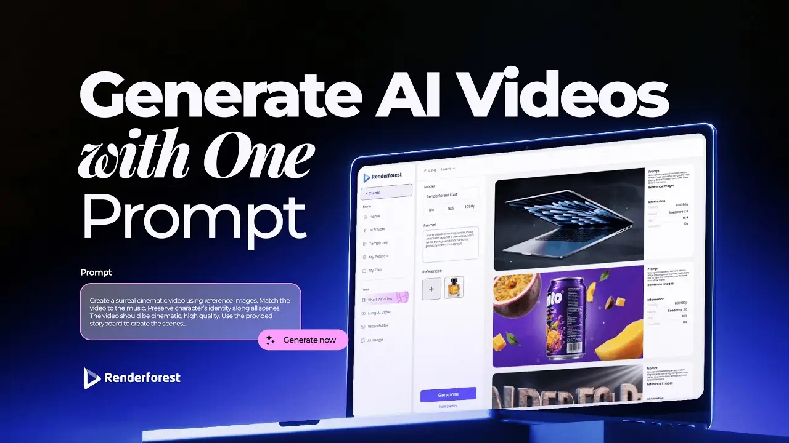
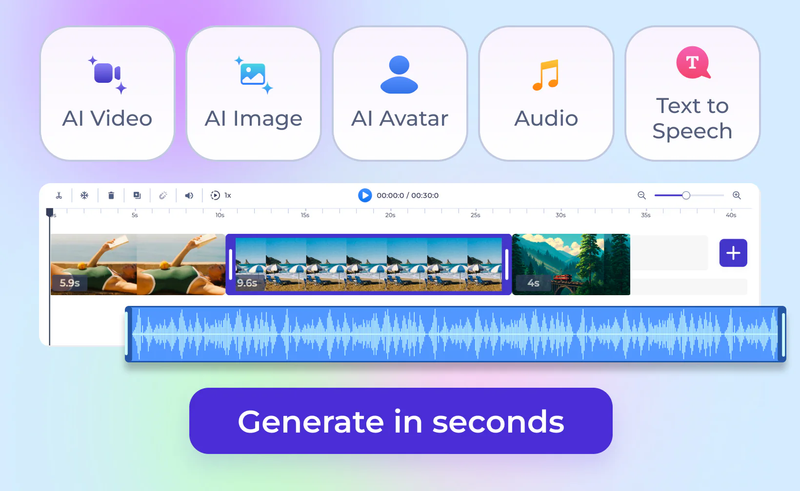

Renderforest 藏了五招冷门绝活：积分通账、画幅三连、续订保命……全是官方不说的操作
Renderforest 的模板套用谁都会，但它的积分跨工具通账、横片一键转三种竖版、到期资产保留等隐藏功能，能帮你省半张年卡的钱，还能少走不少弯路。
你以为 Renderforest官网 就是个"套模板出视频"的懒人工具？选个模板、换几张照片、点导出，完事拉倒——大部分人确实只把它当这个用。但我翻了编辑器的每一个下拉菜单、把帮助中心翻到第三层之后，发现它藏着不少官方宣传稿里根本不提的东西，有些能直接帮你省钱，有些能让你用同一套素材产出三种不同规格的成片。
今天把我挖出来的五招冷门绝活摊开说，每一招都给具体的菜单路径和适用场景。
第一招：积分全工具通账——视频生图语音花的是同一本账
从 Renderforest下载 注册就能拿到免费测试积分，不需要绑卡。这是我觉得 Renderforest 最实惠的隐藏设计之一。
积分（Credits）是平台的通用燃料，但官方首页只模糊说了一句"Credits 可以生成 AI 内容"，没讲清楚它到底有多通用。实际上，你用积分生成视频、用积分生图、用积分做 AI 语音朗读，全部走同一份余额——不需要为每个 AI 工具单独充值开卡，也不存在"视频积分"和"图像积分"分开结算那回事。
这个设计的好处立刻就能感受到：
- 手里剩 500 积分，视频不够用了，可以切去生图做封面
- 图像生成消耗少，可以多花在视频上精修几轮
- 做幻灯片视频的时候，中间需要几张配图，直接在编辑器素材位里点 AI 生图，扣同一个余额
消耗单价按模型强度走，自研快速模型视频额度大（Lite 档大约 2400 条），Veo、Kling 类高端模型额度就小得多（数十到数百条）。省积分的标准姿势是先用便宜模型打草稿、确认方向对了再切贵模型精修——这一套操作下来，积分消耗能砍一半。

第二招：横片一键转三种画幅——同一素材出三套社媒版
手里有一套横版素材，想同时发 YouTube、Reels 和朋友圈？大部分人的做法是做三遍，一遍 16:9，一遍 9:16，一遍 1:1。
Renderforest 藏了个画布比例一键切换，不用重开三个项目，直接在编辑器里复制出三版，每版换个比例就行。更妙的是它的"缩放滑杆"——横版素材塞进竖版画布时，默认是居中缩放，你可以把横片当画中画嵌进去，上下留白的位置刚好放标题文案，不用额外找素材。
实际操作里我发现三个要点：
- 竖版安全区别踩——Reels 和 TikTok 会在画面底部盖 UI、右边盖评论栏，模板里的关键文字尽量往中上部放
- 竖版前两秒定生死——信息流划走速度太快，选模板时优先看开头镜头有没有动感
- 字幕比横版重要——八成竖版用户是静音刷，直接把文案写进镜头里，或者用 AI 语音朗读生成旁白后配字幕
第三招：幻灯片模板不是瞎堆照片——有节奏控制和安全位
幻灯片（Slideshow）模板是 Renderforest 入门门槛最低的一类，生日、旅行、婚礼、企业年鉴，官方模板库全有。但我一开始用的时候踩了好几个坑——横竖照片混排被裁掉、模板里的音乐换了之后转场全不对、前三张没抓眼观众直接划走。
挖了模板的默认设置之后才搞明白几个关键逻辑：
先数模板的图片槽位。每个幻灯片模板有固定的图片位，常见 10 到 30 个，超出就得删镜头或者换更长的模板。我之前瞎塞了 40 张旅行照片进去，结果模板自动砍掉最后 10 张，片尾全家福没了。
转场是按音乐节拍设计的。模板自带的音乐和转场卡点是对齐的，换了音乐之后一定要重新预览一遍，不然转场会从"咔哒"变成"慢半拍"。觉得原配音乐不好听？先试换回原配看节奏对不对，再决定要不要换。
开场三张定调。把最抓眼的三张放在前三位——观众划走的窗口期只有几秒，前两帧没东西后面再精彩也白搭。
还有个细节：分辨率底线别低于 1920×1080，放大后会糊，这个是硬伤，后期救不了。
第四招：续订关闭的两步路径——到期后资产还能继续下载
订阅默认自动续费，很多人忘了关，被扣了好几个月才反应过来。
官方给出的关闭路径其实就两步：进 Subscription（订阅）页面 → 鼠标移到 Recurring（续订）区，点 Active（生效中）按钮 → 弹窗确认 Yes, cancel，状态变 Inactive 就完事了。关了之后当前周期内服务继续可用，到期日之前正常用，到期后自动回到免费状态。
但我更在意的是到期后的资产——官方明确说了："更换或取消订阅后，可以继续下载现有项目"。也就是说，你之前做的视频和项目文件，到期之后不会被删掉，也不会无法访问，照样能下载。唯一的限制是编辑工具回落到免费计划的权限，不能再做新改动。
还有个更值得警惕的点：长期不登录的话，项目可能被清理。这个我也是在 Renderforest文档 里才查到的，比"到期"更狠——到期只是回退权限，清理是真没了。
第五招：免费层也能跑完整流程——先用免费卡验证再下单
Renderforest 新注册账户有免费测试积分，不需要绑卡。这个设计看起来是常规操作，但隐藏的意义是：你可以用免费层把整个工作流跑一遍，确认模板库、编辑器、导出格式都符合你的预期，再决定要不要买年卡。
很多人上来就充了 Lite 或者 Pro，结果发现自己只需要偶尔做个幻灯片，积分根本用不完，或者发现模板风格和自己想要的不搭——免费层先试一遍就能完全避免这种情况。
积分消耗还有个规律：月底清点用量，连续两月见底就该升档，别等余额耗尽了才想起充值。
最后说一个坑：退款政策比你想的硬
官方帮助中心的退款条款写得非常直白：改主意了、买错了、发现自己不会用、用不上了——这几种情况没有义务退款。付款疑问一律走官方支持邮箱沟通，但能不能退得看对方心情。
所以我的建议是：先用免费层跑通一遍，确认自己真的需要，再下单。别冲着头两个月 50% 的折扣就冲动了——折扣再大，退款是真难。

把这些隐藏功能摸透之后，Renderforest 在我眼里就不是个"一键套模板"的玩具了。积分通账让它能当视频生成 + 生图 + 语音三合一用，一键转画幅省了三倍的重复劳动，续订关闭的路径给了"先买后决定"的底气——这些东西官方不会放在首页上写，但用透了能省不少时间和钱。我平时整理的这些操作笔记也同步放在了 GitHub、Gitee 和 GitCode 三个仓库里，国内访问走 Gitee 或 GitCode 更顺手。